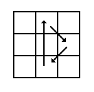
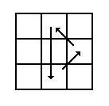

| From table | Inverse |
|  |  |
| R²U Fs R²Bs U R² | R²U' Bs' R²Fs' U' R² |
To further illustrate how inverting works, take for example the sequence R B U L F D. The inverse of this sequence is D' F' L' U' B' R'. As you can see, the exact opposite is performed. It is just like recording yourself performing the pattern on a video tape and then playing it backwards for the inversion.